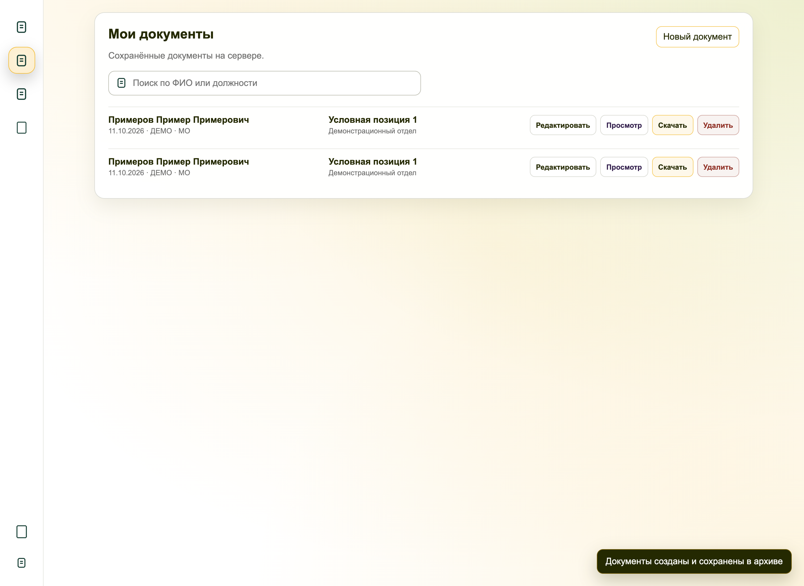

MEDFLOW / АВТОМАТИЗАЦИЯ ПОДГОТОВКИ ДОКУМЕНТОВ
Подготовка направлений без ручного заполнения Excel
Личный проект · Автоматические и неоднократные ручные проверки

01 / ЗАДАЧА
Сократить повторный ввод и ручные операции
Раньше подготовка комплекта требовала переносить данные человека в Excel, выбирать требования, проверять нужные страницы и вручную сохранять результат в нескольких форматах. Отдельно добавлялись подпись и печать. Повторные исправления увеличивали количество действий.
Задача личного проекта — заменить этот процесс последовательным сценарием: получить данные, выбрать условия, проверить заполнение и скачать готовые документы. При этом разовое исправление направления не должно менять общий справочник.
02 / РЕШЕНИЕ
Что делает приложение
Проверка данных перед формированием
Поля и выбранные требования остаются доступными для проверки. Пользователь может уточнить данные конкретного направления; исходный справочник при этом сохраняется.
Для публичного показа подготовлен отдельный запуск с вымышленной организацией, условными позициями и демонстрационными шаблонами. Реальные данные, подписи и печати на странице не используются.

Управление пользователями и доступом
В админке можно приглашать пользователей, назначать роль при регистрации и удалять учётные записи. Приглашение можно отозвать до его использования.
Права проверяются на сервере: управление аккаунтами доступно только администратору, а редактирование справочника — редактору и администратору. После удаления аккаунта его сеансы аннулируются. Пароли хранятся в виде хэшей; запросы на изменение данных защищены проверкой CSRF-токена.

03 / ИНЖЕНЕРИЯ
Ключевые решения при разработке
04 / РЕЗУЛЬТАТ
Готовые документы вместо цепочки ручных действий
Подготовка направления сведена к одной форме: данные человека, условия, проверка и скачивание. Перенос значений между файлами, заполнение шаблона и создание PDF выполняются автоматически.
Проект создан по собственной инициативе и неоднократно проверен вручную. При подготовке кейса в изолированном запуске подтверждены создание Excel и одностраничного PDF, скачивание комплекта и сохранение записи в архиве.

Проверка работоспособности
Работа приложения проверена автоматическими тестами и неоднократными ручными проверками автора.
Для портфолио дополнительно проверены заполнение формы, подбор значений из вымышленного справочника, формирование PDF и Excel, скачивание и личный архив. Данные созданного PDF сверены с введёнными значениями. Дополнительно проверены регистрация по приглашению, отзыв приглашения, удаление аккаунта и запрет доступа к админке для пользователя и редактора.
Это личный проект автоматизации, а не работа по заказу. Приложение выполняет операции программно и не использует языковую модель во время работы.
05 / ТЕХНОЛОГИИ